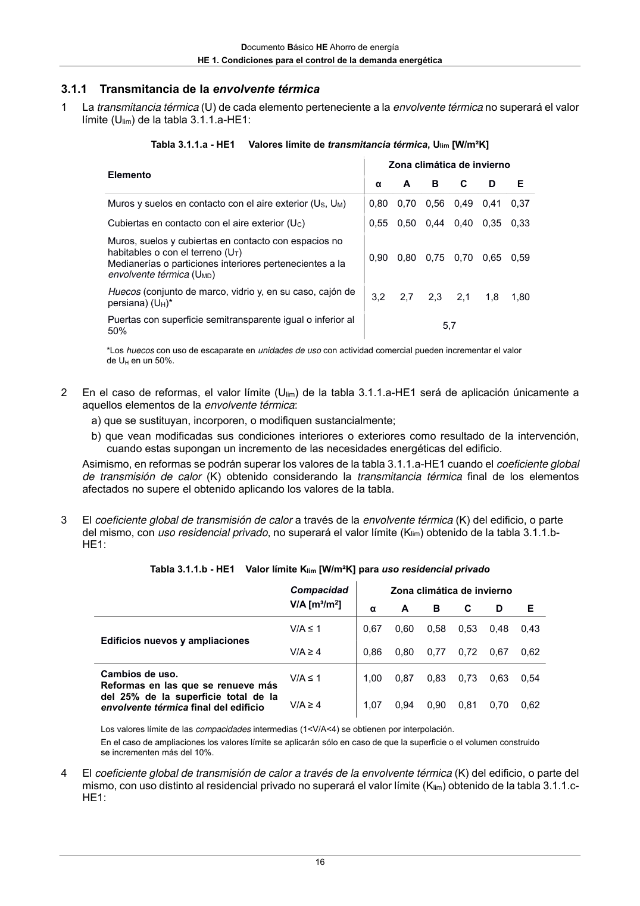

DB-HE · 3.1.1 Transmitancia de la envolvente térmica · versión 2022-06-14
SHA256: 7f890bd495552e979f83f72c5f5c7b642e745911a8e343a7b5b73023ce0e1f05 · página física 16 de 56 · métodos de encabezado
solo si están cotejados.
Formatos: Markdown · JSON de bloques · PDF p. 16 · imagen PNG
Documento Básico HE Ahorro de energía HE 1. Condiciones para el control de la demanda energética 16 3.1.1 Transmitancia de la envolvente térmica 1 La transmitancia térmica (U) de cada elemento perteneciente a la envolvente térmica no superará el valor límite (Ulim) de la tabla 3.1.1.a-HE1: Tabla 3.1.1.a - HE1 Valores límite de transmitancia térmica, Ulim [W/m²K] Elemento Zona climática de invierno α A B C D E Muros y suelos en contacto con el aire exterior (US, UM) 0,80 0,70 0,56 0,49 0,41 0,37 Cubiertas en contacto con el aire exterior (UC) 0,55 0,50 0,44 0,40 0,35 0,33 Muros, suelos y cubiertas en contacto con espacios no habitables o con el terreno (UT) Medianerías o particiones interiores pertenecientes a la envolvente térmica (UMD) 0,90 0,80 0,75 0,70 0,65 0,59 Huecos (conjunto de marco, vidrio y, en su caso, cajón de persiana) (UH)* 3,2 2,7 2,3 2,1 1,8 1,80 Puertas con superficie semitransparente igual o inferior al 50% 5,7 *Los huecos con uso de escaparate en unidades de uso con actividad comercial pueden incrementar el valor de UH en un 50%. 2 En el caso de reformas, el valor límite (Ulim) de la tabla 3.1.1.a-HE1 será de aplicación únicamente a aquellos elementos de la envolvente térmica: a) que se sustituyan, incorporen, o modifiquen sustancialmente; b) que vean modificadas sus condiciones interiores o exteriores como resultado de la intervención, cuando estas supongan un incremento de las necesidades energéticas del edificio. Asimismo, en reformas se podrán superar los valores de la tabla 3.1.1.a-HE1 cuando el coeficiente global de transmisión de calor (K) obtenido considerando la transmitancia térmica final de los elementos afectados no supere el obtenido aplicando los valores de la tabla. 3 El coeficiente global de transmisión de calor a través de la envolvente térmica (K) del edificio, o parte del mismo, con uso residencial privado, no superará el valor límite (Klim) obtenido de la tabla 3.1.1.b- HE1: Tabla 3.1.1.b - HE1 Valor límite Klim [W/m²K] para uso residencial privado Compacidad V/A [m³/m2] Zona climática de invierno α A B C D E Edificios nuevos y ampliaciones V/A ≤ 1 0,67 0,60 0,58 0,53 0,48 0,43 V/A ≥ 4 0,86 0,80 0,77 0,72 0,67 0,62 Cambios de uso. Reformas en las que se renueve más del 25% de la superficie total de la envolvente térmica final del edificio V/A ≤ 1 1,00 0,87 0,83 0,73 0,63 0,54 V/A ≥ 4 1,07 0,94 0,90 0,81 0,70 0,62 Los valores límite de las compacidades intermedias (1<V/A<4) se obtienen por interpolación. En el caso de ampliaciones los valores límite se aplicarán sólo en caso de que la superficie o el volumen construido se incrementen más del 10%. 4 El coeficiente global de transmisión de calor a través de la envolvente térmica (K) del edificio, o parte del mismo, con uso distinto al residencial privado no superará el valor límite (Klim) obtenido de la tabla 3.1.1.c- HE1:
